컴퓨터응용가공산업기사 (2020-08-22 기출문제)
1과목: 기계가공법 및 안전관리
1. 기어 절삭기에서 창성법으로 치형을 가공하는 공구가 아닌 것은?
- 호브(hob)
- 브로치(broach)
- 래크 커터(rack cutter)
- 피니언 커터(pinion cutter)
(정답률: 70%)

2. 3개 조(jaw)가 120˚간격으로 배치되어있고, 조가 동일한 방향, 동일한 크기로 동시에 움직이며 원형, 삼각, 육각 제품을 가공하는데 사용하는 척은?
- 단동척
- 유압척
- 복동척
- 연동척
(정답률: 75%)
3. 공기 마이크로미터에 대한 설명으로 틀린 것은?
- 압축 공기원이 필요하다.
- 비교 측정기로 1개의 마스터로 측정이 가능하다.
- 타원, 테이퍼, 편심 등의 측정을 간단히 할 수 있다.
- 확대 기구에 기계적 요소가 없기 때문에 장시간 고정도를 유지할 수 있다.
(정답률: 65%)
4. 밀링작업에 대한 안전사항으로 틀린 것은?
- 가동 전에 각종 레버, 자동이송, 급속이송장치 등을 반드시 점검한다.
- 정면커터로 절삭작업을 할 때 칩커버를 벗겨 놓는다.
- 주축속도를 변속시킬 때에는 반드시 주축이 정지한 후에 변환한다.
- 밀링으로 절삭한 칩은 날카로우므로 주의하여 청소한다.
(정답률: 84%)
5. 금긋기 작업을 할 때 유의사항으로 틀린 것은?
- 선은 가늘고 선명하게 한 번에 그어야 한다.
- 금긋기 선은 여러 번 그어 혼동이 일어나지 않도록 한다.
- 기준면과 기준선을 설정하고 금긋기 순서를 결정하여야 한다.
- 같은 치수의 금긋기 선은 전후, 좌우를 구분하지 말고 한 번에 긋는다.
(정답률: 69%)
6. 숫돌 입자의 크기를 표시하는 단위는?
- mm
- cm
- mesh
- inch
(정답률: 70%)
7. 연삭숫돌의 결합제(bond)와 표시기호의 연결이 바른 것은?
- 셸락 : E
- 레지노이드 : R
- 고무 : B
- 비트리파이드 : F
(정답률: 58%)
8. 공기 마이크로미터를 원리에 따라 분류할 때 이에 속하지 않는 것은?
- 광학식
- 배압식
- 유량식
- 유속식
(정답률: 67%)
9. 길이 400 mm, 지름 50 mm의 둥근 일감을 절삭속도 100 m/min로 1회 선삭하려면 절삭시간은 약 몇 분 걸리겠는가? (단, 이송은 0.1 mm/rev이다.)
- 2.7
- 4.4
- 6.3
- 9.2
(정답률: 51%)
10. 밀링 머신에서 절삭공구를 고정하는데 사용되는 부속장치가 아닌 것은?
- 아버(arbor)
- 콜릿(collet)
- 새들(saddle)
- 어댑터(adapter)
(정답률: 67%)
11. 해머 작업 시 유의사항으로 틀린 것은?
- 녹이 있는 재료를 가공할 때는 보호 안경을 착용한다.
- 처음에는 큰 힘을 주면서 가공한다.
- 기름이 묻은 손이나 장갑을 끼고 가공을 하지 않는다.
- 자루가 불안정한 해머는 사용하지 않는다.
(정답률: 80%)
12. 합금 공구강에 대한 설명으로 틀린 것은?
- 탄소공구강에 비해 절삭성이 우수하다.
- 저속 절삭용, 총형 절삭용으로 사용된다.
- 합금공구강에는 Ag, Hg의 원소가 포함되어 있다.
- 경화능을 개선하기 위해 탄소공구강에 소량의 합금원소를 첨가한 강이다.
(정답률: 62%)
13. 다음 중 분할법의 종류에 해당하지 않는 것은?
- 단식분할법
- 직접분할법
- 차동분할법
- 간접분할법
(정답률: 53%)
14. 공작기계의 3대 기본운동이 아닌 것은?
- 전단운동
- 절삭운동
- 이송운동
- 위치조정운동
(정답률: 72%)
15. 보링 머신에서 사용되는 공구는?
- 엔드밀
- 정면 커터
- 아버
- 바이트
(정답률: 53%)
16. 고속도강 드릴을 이용하여 황동을 드릴링 할 때, 적합한 드릴의 선단각은?
- 60˚
- 90˚
- 110˚
- 125˚
(정답률: 61%)
17. 목재, 피혁, 직물 등 탄성이 있는 재료로 된 바퀴 표면에 부착시킨 미세한 연삭 입자로서 연삭 작업을 하게하여 가공 표면을 버핑 전에 다듬질 하는 방법은?
- 폴리싱
- 전해가공
- 전해연마
- 버니싱
(정답률: 60%)
18. 밀링가공에서 하향절삭 작업에 관한 설명으로 틀린 것은?
- 절삭력이 하향으로 작용하여 가공물 고정이 유리하다.
- 상향절삭보다 공구수명이 길다.
- 백래시 제거 장치가 필요하다.
- 기계강성이 낮아도 무방하다.
(정답률: 63%)
19. 구성인선의 방지대책에 관한 설명 중 틀린 것은?
- 경사각을 작게 한다.
- 절삭 깊이를 적게 한다.
- 절삭속도를 빠르게 한다.
- 절삭공구의 인선을 예리하게 한다.
(정답률: 68%)
20. 고속가공의 특성에 대한 설명으로 틀린 것은?
- 황삭부터 정삭까지 한 번의 셋업으로 가공이 가능하다.
- 열처리된 소재는 가공할 수 없다.
- 칩(chip)에 열이 집중되어, 가공물은 절삭열 영향이 적다.
- 가공시간을 단축시켜, 가공능률을 향상시킨다.
(정답률: 62%)
2과목: 기계설계 및 기계재료
21. 탄소강에 대한 설명 중 틀린 것은?
- 인은 상온 취성의 원인이 된다.
- 탄소의 함유량이 증가함에 따라 연신율은 감소한다.
- 황은 적열 취성의 원인이 된다.
- 산소는 백점이나 헤어 크랙의 원인이 된다.
(정답률: 55%)
22. 다음 중 합금강을 제조하는 목적으로 적당하지 않은 것은?
- 내식성을 증대시키기 위하여
- 단접 및 용접성 향상을 위하여
- 결정입자의 크기를 성장시키기 위하여
- 고온에서의 기계적 성질 저하를 방지하기 위하여
(정답률: 61%)
23. 금속을 0K 가까이 냉각하였을 때, 전기저항이 0에 근접하는 현상은?
- 초소성 현상
- 초전도 현상
- 감수성 현상
- 고상 접합 현상
(정답률: 74%)
24. 심냉 처리의 효과가 아닌 것은?
- 재질의 연화
- 내마모성 향상
- 치수의 안정화
- 담금질한 강의 경도 균일화
(정답률: 54%)
25. 수지 중 비결정성 수지에 해당하는 것은?
- ABS 수지
- 폴리에틸렌 수지
- 나일론 수지
- 폴리프로필렌 수지
(정답률: 51%)
26. 분말 야금에 의하여 제조된 소결 베어링 합금으로 급유하기 어려운 경우에 사용되는 것은?
- Y 합금
- 켈밋
- 화이트메탈
- 오일리스베어링
(정답률: 61%)
27. 일반적으로 탄소강의 청열취성이 나타나는 온도(˚C)는?
- 50~150
- 200~300
- 400~500
- 600~700
(정답률: 57%)
28. 주철의 성장을 억제하기 위하여 사용되는 첨가 원소로 가장 적합한 것은?
- Pb
- Sn
- Cr
- Cu
(정답률: 47%)
29. 황동에 납을 1.5 ~ 3.7%까지 첨가한 합금은?
- 강력 황동
- 쾌삭 황동
- 배빗 메탈
- 델타 메탈
(정답률: 65%)
30. 양은 또는 양백은 어떤 합금계인가?
- Fe-Ni-Mn계 합금
- Ni-Cu-Zn계 합금
- Fe-Ni계 합금
- Ni-Cr계 합금
(정답률: 53%)
31. 표준 평기어를 측정하였더니 잇수 Z=54, 바깥지름 Do=280mm이었다. 모듈 m, 원주 피치 p, 피치원지름 D는 각각 얼마인가?
- m=5, p=15.7mm, D=270mm
- m=7, p=31.4mm, D=270mm
- m=5, p=15.7mm, D=350mm
- m=7, p=31.4mm, D=350mm
(정답률: 47%)
32. 베어링 설치 시 고려해야 하는 예압(preload)에 관한 설명으로 옳지 않은 것은?
- 예압은 축의 흔들림을 적게 하고, 회전정밀도를 향상시킨다.
- 베어링 내부 틈새를 줄이는 효과가 있다.
- 예압량이 높을수록 예압 효과가 커지고, 베어링 수명에 유리하다.
- 적절한 예압을 적용할 경우 베어링의 강성을 높일 수 있다.
(정답률: 60%)
33. 굽힘 모멘트만을 받는 중공축의 허용 굽힘응력 σb, 중공축의 바깥지름 D, 여기에 작용하는 굽힘모멘트 M일 때, 중공축의 안지름 d를 구하는 식으로 옳은 것은?
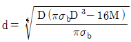
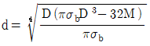
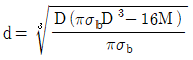
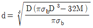
(정답률: 43%)
34. 블록 브레이크의 설명으로 틀린 것은?
- 큰 회전력의 전달에 알맞다.
- 마찰력을 이용한 제동장치이다.
- 블록 수에 따라 단식과 복식으로 나뉜다.
- 블록 브레이크는 회전 장치의 제동에 사용된다.
(정답률: 54%)
35. 잇수가 20개인 스프로킷 휠이 롤러 체인을 통해 8kW의 동력을 받고 있다. 이 스프로킷 휠의 회전수는 약 몇 rpm인가? (단, 파단하중은 22.1kN, 안전율은 15, 피치는 15.88mm이며, 부하보정계수는 고려하지 않는다.)
- 5⑤
- 1026
- 1650
- 1868
(정답률: 39%)
36. 지름 50mm인 축에 보스의 길이 50mm인 기어를 붙이려고 할 때 250N·m의 토크가 작용한다. 키에 발생하는 압축 응력은 약 몇 MPa인가? (단, 키의 높이는 키홈 높이의 2배이며, 묻힘 키의 폭과 높이는 b x h = 15mm x 10mm이다.)
- 30
- 40
- 50
- 60
(정답률: 34%)
37. 50kN의 축방향 하중과 비틀림이 동시에 작용하고 있을 때 가장 적절한 최소 크기의 체결용 미터나사는? (단, 허용인장응력은 45N/mm2이고, 비틀림 전단응력은 수직응력의 1/3이다.)
- M36
- M42
- M48
- M56
(정답률: 23%)
38. 공기스프링에 대한 설명으로 틀린 것은?
- 감쇠성이 적다.
- 스프링 상수 조절이 가능하다.
- 종류로 벨로즈식, 다이어프램식이 있다.
- 주로 자동차 및 철도차량용의 서스펜션(suspension) 등에 사용된다.
(정답률: 44%)
39. 1줄 겹치기 리벳 이음에서 리벳의 수는 3개, 리벳 지름은 18mm, 작용 하중은 10kN일 때 리벳 하나에 작용하는 전단응력은 약 몇 MPa인가?
- 6.8
- 13.1
- 24.6
- 32.5
(정답률: 43%)
40. 다음 중 변형률(strain, ε)에 관한 식으로 옳은 것은? (단, ℓ : 재료의 원래길이, λ : 줄거나 늘어난 길이, A : 단면적, σ : 작용 응력)
- ε = λ×ℓ2
- ε = σ/ℓ
- ε = λ/A
- ε = λ/ℓ
(정답률: 45%)
3과목: 컴퓨터응용가공
41. 곡면가공 시의 공구간섭(overcut)에 대한 설명으로 틀린 것은?
- 곡면에 대한 CL데이터가 꼬이게 되면 overcut이 발생한다.
- 오목한 곡면부위를 길이가 짧은 엔드밀로 가공하면 overcut이 발생한다.
- overcut을 방지하려면 공구의 반경이 곡면상의 최소 곡률반경보다 작아야 한다.
- 예각으로 연결되어 있는 두 곡면의 바깥쪽의 둔각 부분을 가로질러 공구 경로가 생성된 경우에 overcut이 발생한다.
(정답률: 45%)
42. 다음 직선의 식을 매개 변수식으로 옳게 표현한 것은?
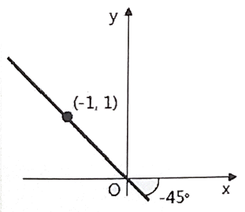
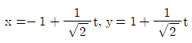
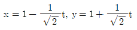
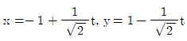
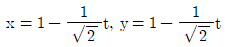
(정답률: 44%)
43. 다음의 데이터 교환 표준 가운데 제품의 전 주기 (즉, 설계, 제조, 검사, 서비스)에 관한 데이터를 표현하기 위해 고안된 것은?
- DXF
- IGES
- STEP
- VDA
(정답률: 46%)
44. 다음 중 머시닝센터에서 3차원 곡면을 정삭 가공 하고자 할 때 가장 많이 사용되는 공구는?
- 볼 엔드밀(ball endmill)
- 플랫 엔드밀(flat endmill)
- 페이스 커터(face cutter)
- 필렛 엔드밀(fillet endmill)
(정답률: 70%)
45. 모델링 기법 중에서 실루엣을 구할 수 없는 기법은?
- B-rep 방식
- CSG 방식
- 서피스 모델링
- 와이어 프레임 모델링
(정답률: 61%)
46. 모델링시스템 중 체적계산을 완벽하게 할 수 있는 모델링 시스템은?
- 와이어프레임 모델링
- 서피스 모델링
- 솔리드 모델링
- 조립체 모델링
(정답률: 69%)
47. 다음 중 가공 특징 형상(feature)이 아닌 것은?
- 모떼기(chamfer)
- 구멍(hole)
- 슬롯(slot)
- 보스(boss)
(정답률: 56%)
48. CAD시스템에서 원추곡선이 아닌 것은?
- 타원
- 쌍곡선
- 포물선
- 스플라인곡선
(정답률: 53%)
49. 3차 Beizer 곡선의 조정점이 다음과 같은 순서로 놓일 때, 곡선 시작점에서 단위 접선벡터는?
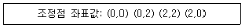
- (1,0)
- (0,1)
- (0.707,0.707)
- (-1,0)
(정답률: 54%)
50. 가상현실 기술을 이용하여 실제의 모형 대신 컴퓨터로 모형을 제작하는 것은?
- rapid prototyping
- rapid tooling
- virtual prototyping
- virtual reality
(정답률: 55%)
51. RP공정의 응용분야 중 주요한 영역이 아닌 것은?
- 제조공정을 위한 모델
- 기능검사를 위한 시작품
- 설계평가를 위한 시작품
- 원가절감을 위한 대량생산
(정답률: 62%)
52. 모델링과 연관된 용어에 관한 설명으로 틀린 것은?
- 스위핑(Sweeping) : 하나의 2차원 단면형상을 입력하고 이를 안내곡선을 따라 이동시켜 입체를 생성
- 스키닝(Skinning) : 여러 개의 단면현상을 입력하고 이를 덮어 싸는 입체를 생성
- 리프팅(Lifting) : 주어진 물체 특정면의 전부 또는 일부를 원하는 방향으로 움직여서 물체가 그 방향으로 늘어난 효과를 갖도록 하는 것
- 블렌딩(Blending) : 주어진 형상을 국부적으로 변화시키는 방법으로 접하는 곡면을 예리한 모서리로 처리하는 방법
(정답률: 55%)
53. 벡터 리프레쉬(Vector-refresh)그래픽 장치의 단점으로 화면이 껌벅거리는 현상은?
- 플리커링(flickering)
- 동적 디스플레이(dynamic display)
- 섀도우 마스크(shadow mask)
- 직선을 항상 직선으로 나타내는 기능
(정답률: 52%)
54. VDI라는 이름으로 시작된 하드웨어 기준의 표준으로, 그래픽 기능과 하드웨어 간에 공유되어 하드웨어를 제어할 수 있는 표준규격은?
- GKS(Graphical Kernel System)
- CGI(Computer Graphics Initiative)
- CGM(Computer Graphics Metafile)
- IGES(Initial Graphics Exchange Specification)
(정답률: 44%)
55. 서피스 모델(surface model)의 특징이 아닌 것은?
- 체적 등 물리적 성질의 계산이 쉽다.
- 2개 면의 교선을 구할 수 있다.
- NC 가공 정보를 얻을 수 있다.
- 은선 제거가 가능하다.
(정답률: 58%)
56. 2차원 데이터를 x축에 대한 대칭변화를 하기 위한 변화행렬로 옳은 것은?
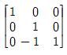
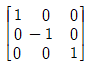
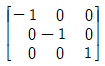
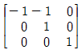
(정답률: 59%)
57. 4개의 모서리 점과 4개의 경계 곡선을 부드럽게 연결한 곡면은?
- 퍼거슨 곡면
- 쿤스 곡면
- 베지어 곡면
- B-spline 곡면
(정답률: 55%)
58. CL DATA를 이용하여 CNC공작기계의 제어부에 맞게 NC DATA를 생성하는 과정을 무엇이라 하는가?
- 후처리
- 공구경로 검증
- CL 데이터 생성
- 데이터 베이스
(정답률: 40%)
59. B-spline 곡선의 특징으로 틀린 것은?
- 연속성 보장
- 국부적 조정 가능
- 역 변환 용이
- 다각형에 따른 형상 예측 불가능
(정답률: 51%)
60. 여러 대의 NC공작기계를 한 대의 컴퓨터에 연결하여 제어하는 시스템은?
- NC
- CNC
- DNC
- FMS
(정답률: 68%)
4과목: 기계제도 및 CNC공작법
61. 기준치수에 대한 구멍공차가
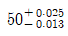
일 때 치수 공차의 값은?- 0.012
- 0.013
- 0.025
- 0.038
(정답률: 63%)
62. 다음 그림에서 나사의 완전나사부를 나타내는 것은?
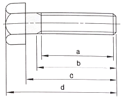
- a
- b
- c
- d
(정답률: 58%)
63. 다음 그림과 같이 지시선의 화살표에 온 흔들림 공차를 적용하고자 할 때 기하공차의 표기가 옳은 것은?
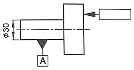
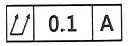
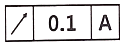
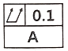
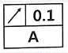
(정답률: 60%)
64. 아래 투상도와 같이 경사부가 있는 대상물에서 그 경사면에 있는 구멍의 실형을 표시할 필요가 있는 경우에 나타내는 투상도는?
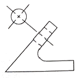
- 가상도
- 국부 투상도
- 부분 확대도
- 회전 투상도
(정답률: 59%)
65. 다음 그림과 같이 제3각 정투상도의 평면도와 우측면도에 가장 적합한 정면도는?
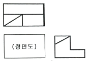
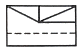
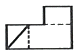
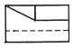
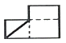
(정답률: 59%)
66. 센터 구멍의 간략 도시 방법에서 다음 설명을 옳게 도시한 것은?
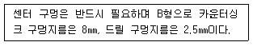
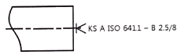
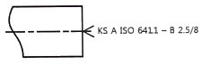
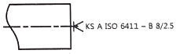
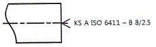
(정답률: 51%)
67. 나사는 단독으로 나타내거나 조합하여 표시하기도 하는데 다음 중 그 표시 방법으로 틀린 것은?
- G1/2 A
- M50×2 - 6H
- Rp1/2 / R1/2
- UNC No.4-40 - 6H/g
(정답률: 41%)
68. 굵은 1점 쇄선의 용도로 옳은 것은?
- 인접부분을 참고로 표시할 떄 사용한다.
- 수면, 유면 등의 위치를 표시할 때 사용한다.
- 대상물의 보이지 않는 부분의 모양을 표시할 때 사용한다.
- 특수한 가공을 하는 부분 등 특별한 요구사항을 적용할 수 있는 범위를 표시할 때 사용한다.
(정답률: 56%)
69. 기어를 도시할 때 선을 나타내는 방법으로 틀린 것은?
- 잇봉우리원은 가는 실선으로 표시한다.
- 피치원은 가는 1점 쇄선으로 표시한다.
- 잇줄방향은 일반적으로 3개의 가는 실선으로 표시한다.
- 이끝원은 가는 실선으로 표시한다. 단, 축에 직각인 방향에서 본 그림을 단면으로 도시할 때 이골의 선은 굵은 실선으로 표시한다.
(정답률: 38%)
70. 가공방법과 기호의 연결이 옳은 것은?
- 래핑 - MSL
- 브로칭 - BR
- 스크레이핑 - SB
- 평면 연삭 - GBS
(정답률: 66%)
71. 머시닝센터에서 M8 × 1.25인 암나사를 태핑 사이클로 가공하고자 할 때, 주축의 이송속도는 몇 mm/min인가? (단, 주축 스핀들은 600rpm으로 지령되어 있다.)
- 125
- 750
- 1000
- 1250
(정답률: 56%)
72. CNC방전가공 시 공작물의 예비가공에 의한 효과가 아닌 것은?
- 방전가공 시간을 단축시킨다.
- 가공 칩 배출을 용이하게 한다.
- 전극의 소모량을 줄일 수 있다.
- 가공 칩 양이 증가하여 정밀도를 향상시킨다.
(정답률: 63%)
73. CNC 공작기계 작업 중 이상 발생 시 작업자가 해야 할 응급조치에 해당하지 않는 것은?
- 비상 정지 스위치를 누르고 작업을 중단한다.
- 강전반 내의 회로도를 조작하여 검사한다.
- 경고등의 점등 여부를 확인한다.
- 작업을 멈추고 원인을 제거한다.
(정답률: 69%)
74. CNC선반에서 공구 기능을 설명한 것 중 옳은 것은?
- T0101 : 1번 공구를 한번만 선택
- T0200 : 2번 공구와 0번 공구를 교환
- T1212 : 12번 공구를 위치보정의 12번 보정량으로 보정
- T0102 : 2번 공구를 위치보정의 1번 보정량으로 보정
(정답률: 67%)
75. 지름 50mm, 가공길이가 800mm인 환봉을 절삭속도는 50m/min, 이송은 0.2mm/rev일 때 선반에서 1회 절삭 가공하는데 소요되는 시간은 약 얼마인가?
- 6.6분
- 8.6분
- 10.6분
- 12.6분
(정답률: 36%)
76. CNC선반에서 300rpm으로 주축 스핀들이 회전하고 있다. 공작물 Ø40위치에서 홈 바이트가 주축이 5회전하는 동안 휴지(dwell)하도록 지령하는 프로그램으로 옳은 것은?
- G04 X0.1 ;
- G04 U10.0 ;
- G04 P1000 ;
- G04 P100 ;
(정답률: 61%)
77. 모달 G-코드에 대한 설명으로 틀린 것은?
- 같은 그룹의 모달 G-코드를 한 블록에 여러 개 지령을 하면 동시에 제어된다.
- 같은 기능의 모달 G-코드는 생략할 수 있다.
- 모달 G-코드는 같은 그룹의 다른 G-코드가 나올 때까지 다음 블록에 영향을 준다.
- 모달 G-코드는 그룹 별로 나누어져 있다.
(정답률: 53%)
78. 머시닝센터에서 보정번호 03번에 15.0의 보정값을 프로그램에 의해 입력하는 방법으로 옳은 것은?
- G10 P03 X15.0 ;
- G10 P03 R15.0 ;
- G10 D03 X15.0 ;
- G10 D03 R15.0 ;
(정답률: 36%)
79. CNC 공작기계에서 공구의 이동위치를 지령하는 방식이 아닌 것은?
- 중심지령 방식
- 증분지령 방식
- 절대지령 방식
- 혼합지령 방식
(정답률: 60%)
80. 머시닝센터 프로그램에서 보조 프로그램의 끝을 나타내며 주 프로그램으로 되돌아가는 보조기능은?
- M30
- M02
- M98
- M99
(정답률: 47%)